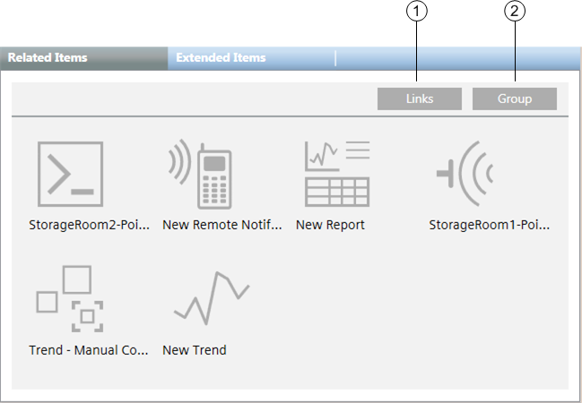

Extended Items Workspace
Extended Items allows you to switch between small images and text views of the items in the list, or between categories and flat-list views of the items in the list.

Extended Items Workspace | ||
| Name | Description |
1 | Links/Icons buttons | Clicking the Links button displays items as text links. The display mode that is currently selected in System Browser determines how text displays. For example, text will be displayed as description, name, description plus name, or name plus description. Clicking the Icons button displays items as icon links. |
2 | Group/Ungroup buttons | If text links are displayed, clicking the Group button displays text links by categories such as analog inputs, analog outputs, schedules, reports, PDFs, Word files, and Web links. If icons are displayed, clicking the Group button displays icon links by categories. |